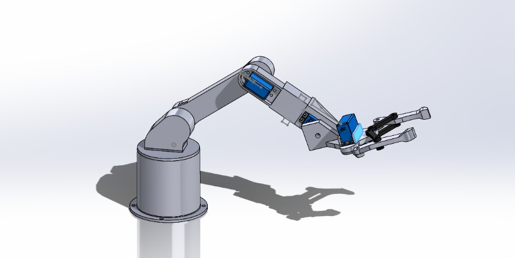
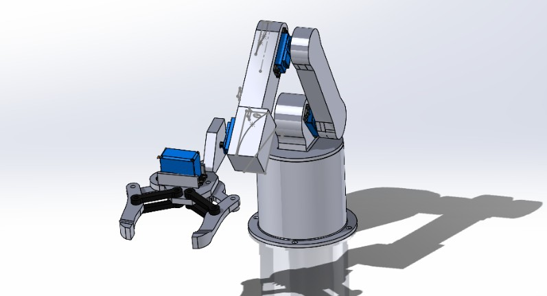

Les Étapes du Projet
Étape 1 : Analyse & Cycle de vie
Analyse complète du besoin pour l'environnement exigeant d'un bar. Cette étape comprend l'étude fonctionnelle, la définition des contraintes opérationnelles, ainsi que l'estimation de la durée de vie du système face à un usage intensif et aux risques d'éclaboussures.
Étape 2 : Conception Mécanique 3D
Réalisation de la conception assistée par ordinateur (CAO) via SolidWorks. Nous avons modélisé les différents segments du bras, intégré les emplacements pour les moteurs et validé les amplitudes de mouvement nécessaires pour manipuler les verres en toute sécurité.


Étape 3 : Programmation, ROS2 & Vision
Mise en place de l'architecture logicielle de contrôle et de perception :
- ROS2 & Bridge : Création de l'environnement de communication pour relier nos différents nœuds et capteurs.
- MoveIt : Utilisation du framework pour le calcul de la cinématique inverse et la planification fluide des trajectoires du bras.
- Vision par caméra : Intégration d'une caméra pour détecter les verres, analyser leur positionnement et guider le robot.
- Démo : Réalisation d'une démonstration fonctionnelle validant la chaîne d'action de la détection au mouvement.
Étape 4 : Prototypage & Tests
En cours de rédaction... Assemblage physique du robot, calibrage des moteurs en lien avec l'interface ROS2, et premiers tests en conditions réelles de préhension.


Défis & Difficultés Rencontrées
Gestion de Projet & Coordination
Un projet multidisciplinaire demande une organisation rigoureuse. Bien que chacun de nous ait des tâches techniques bien définies (CAO, ROS, traitement d'image...), la principale difficulté a résidé dans la coordination globale. Harmoniser le calendrier de la fabrication mécanique avec les impératifs du calendrier de développement informatique a été un vrai défi. L'assemblage final a nécessité de nombreux ajustements en direct pour faire coïncider le travail de chacun, mettant en lumière l'importance d'une communication continue en ingénierie.
Obstacles Techniques
- Modélisation URDF complexe : La création du fichier URDF (Unified Robot Description Format) a nécessité un travail méticuleux de la part de Giulia. Définir correctement les repères spatiaux (frames), les masses, l'inertie et les limites articulaires du bras a demandé de nombreuses itérations pour obtenir une simulation sans erreur, fidèle à la réalité physique de notre robot.
- Mise en route fastidieuse de la caméra : L'initialisation matérielle et la configuration de la caméra (gérées par Baptiste) se sont avérées plus longues et capricieuses que prévu. Assurer un flux vidéo stable et continu vers notre environnement ROS a nécessité un débuggage approfondi.
- Déploiement du code sur la Raspberry Pi Cam : Le portage de la matrice de vision (développée par Léopold) vers la Raspberry Pi a posé un défi majeur d'optimisation. L'algorithme initial demandait des ressources de calcul que la carte embarquée peinait à fournir, posant des problèmes de compatibilité et de latence qu'il a fallu contourner pour maintenir une détection fluide.
- Gestion des tensions et de l'alimentation : L'électronique de puissance a apporté son lot de complications. Coordonner les différentes plages de tensions nécessaires (notamment l'alimentation stable requise pour la logique des contrôleurs et la Raspberry Pi face aux fortes demandes de courant des servomoteurs lors des phases d'accélération) a demandé une attention particulière afin d'éviter les chutes de tension critiques et les redémarrages intempestifs du système.